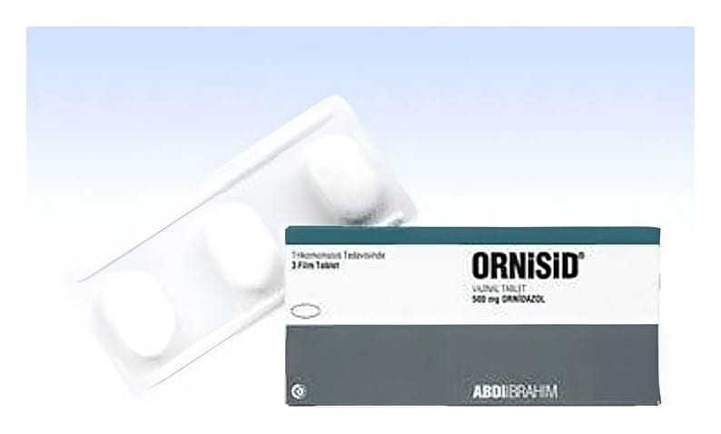

Ornisid 500 mg Vajinal Tablet, 5 Adet

Ne için kullanılır
KT · Bölüm 1ORNİSİD, ornidazol etkin maddesi içeren antibakteriyel (bakterilere karşı etkili) ve antiprotozoal (protozoonlara karşı etkili olan) bir ilaçtır. ORNİSİD vajinal tablet, her bir tablet içerisinde 500 mg ornidazol etkin maddesini içermektedir. ORNİSİD, 3 ve 5 vajinal tablet içeren ambalajlarda sunulmaktadır. ORNİSİD, vajinadaki florayı oluşturan mikroorganizmaların hastalık meydana getirmesi ve çeşitli vajina iltihaplarının görülmesi durumunda kullanılır.